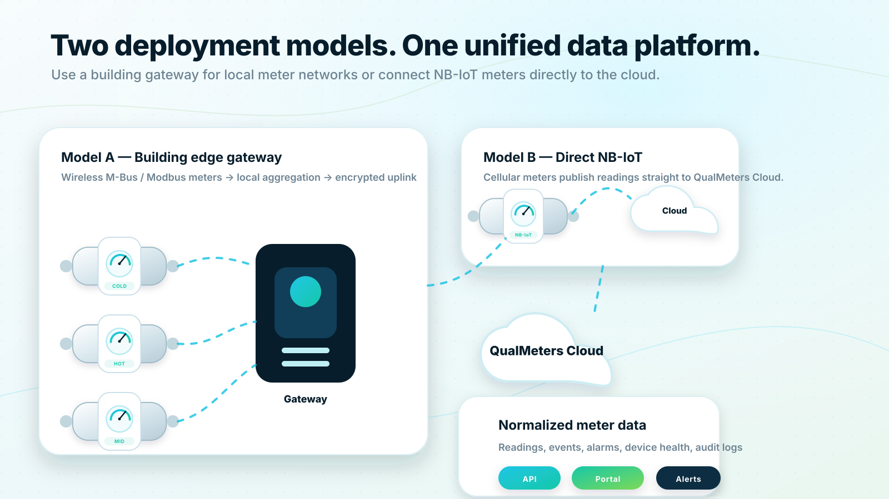

Platform overview
Two deployment models. One unified water data platform.
QualMeters supports both building-level data aggregation and direct NB-IoT meter communication. In both cases, meter readings are normalized into a secure cloud platform that powers resident portals, organization dashboards, alerts and REST API integrations.

Platform overview
Model A : Building gateway deployment
In apartment buildings and dense property environments, a local gateway can collect data from meters using Wireless M-Bus, Modbus and other supported protocols. The gateway forwards normalized data securely to the QualMeters cloud while also supporting local diagnostics and store-and-forward resilience.
Use this model when:
- Many apartment meters are installed in one building or campus
- Wireless M-Bus or wired Modbus devices are preferred
- Local data concentration improves coverage or cost efficiency
- The property owner wants centralized building-level device management
Platform overview
Model B : Direct NB-IoT deployment
With NB-IoT meters, each meter can send readings directly to the QualMeters cloud over a cellular low-power wide-area network. This can reduce the need for building-level infrastructure and is useful when direct coverage is available and the meter estate is geographically distributed.
Use this model when:
- Meters have integrated NB-IoT communication
- Buildings are distributed across a wide area
- A gateway installation is unnecessary or impractical
- The project benefits from cellular coverage and direct device onboarding
Platform overview
A common data model for every reading
Regardless of how the reading arrives, the platform should store data in a common structure: meter identity, apartment or property association, timestamp, volume, temperature class, communication source, reading quality, alarm state and device health. This keeps dashboards, APIs and resident portals independent from the communication technology used in the field.
Platform overview
Platform capabilities
Meter data management: Device registry, meter lifecycle, readings, alarms, metadata and audit trail.
Resident experience: QR-based access, current-reading verification, consumption graphs, alerts and comparison features.
Organization tools: Property dashboards, fleet health, leak indicators, exports, API access and alert management.
Integration layer: REST API, webhook-ready event model, billing exports and future protocol adapters.
Security foundation: Tenant separation, role-based access, encrypted data transport and structured audit logging.
Platform overview
Next step
Need to choose between gateway and NB-IoT?
QualMeters can map your building types, meter locations, protocol requirements and data needs into a recommended architecture.
Request architecture consultation Request a demo
Request a demo